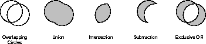

| CONTENTS | PREV | NEXT | Java 2D API |
A Shape is an instance of any class that implements the Shape interface, such as GeneralPath or Rectangle2D.Float. A Shape's contour (outline) is referred to as its path.When a Shape is drawn, the pen style defined by the Stroke object in the Graphics2D context is applied to the Shape's path. When a Shape is filled, the Paint in the Graphics2D context is applied to the area within its path. For more information, see "Rendering with Graphics2D".
A Shape's path can be also used to define a clipping path. A clipping path determines what pixels are rendered--only those pixels that lie within the area defined by the clipping path are rendered. The clipping path is part of the Graphics2D context. For more information, see "Setting the Clipping Path".
A GeneralPath is a shape that can be used to represent any two-dimensional object that can be constructed from lines and quadratic or cubic curves. For convenience, java.awt.geom provides additional implementations of the Shape interface that represent common geometric objects such as rectangles, ellipses, arcs, and curves. The Java 2DTM API also provides a special type of shape that supports constructive area geometry.
Constructive Area Geometry (CAG) is the process of creating new geometric objects by performing boolean operations on existing objects. In the Java 2D API, a special type of Shape called an Area supports boolean operations. You can c onstruct an Area from any Shape.Areas support the following Boolean operations:
These operations are illustrated in Figure 3-1.
A bounding box is a rectangle that fully encloses a shape's geometry. Bounding boxes are used to determine whether or not an object has been selected or "hit" by the user.The Shape interface defines two methods for retrieving a shape's bounding box, getBounds and getBounds2D. The getBounds2D method returns a Rectangle2D instead of a Rectangle, providing a higher-precision description of the shape's bounding box.
Shape also provides methods for determining whether or not: